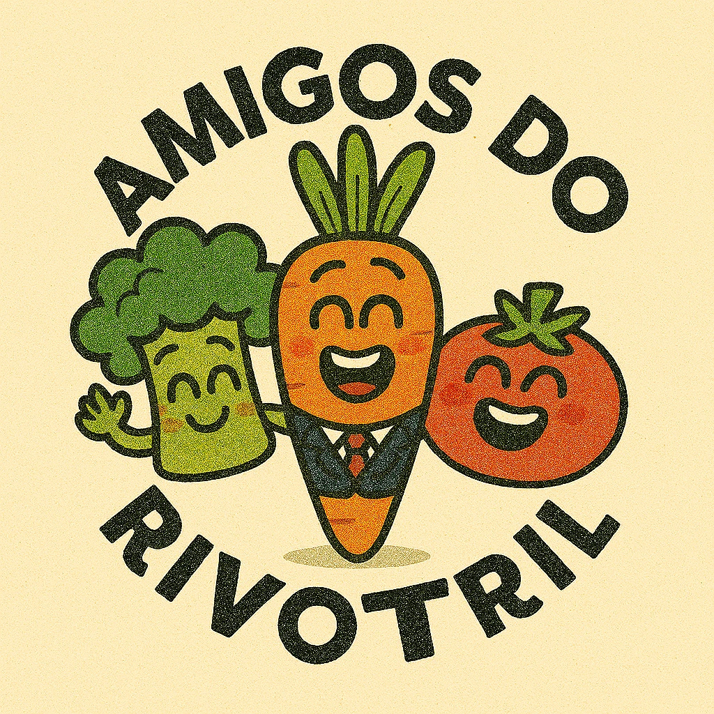

Quem Somos
Somos uma organização sem fins lucrativos que atua com vegetais carentes.
Missão da ONG Amigos do Rivotril
Fornecemos ajuda psicológica e afins desde a germinação até a senescência para os vegetais com necessidade.
Contato com a ONG Amigos do Rivotril
Endereço: Av. Dr. Gastão Vidigal, 1946 - Vila Lopoldina - São Paulo/SP
Telefone: (11) 99999-0000
E-mail: umdois@feijaocomarroz.com.br